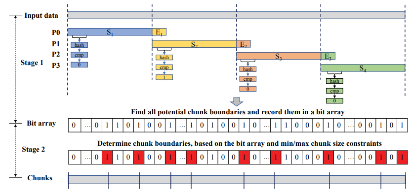

| Venue | Category |
|---|---|
| SYSTOR'19 | Deduplication Chunking |
SS-CDC: A Two-stage Parallel Content-Defined Chunking for Deduplicating Backup Storage1. SummaryMotivation of this paperSS-CDCImplementation and Evaluation2. Strength (Contributions of the paper)3. Weakness (Limitations of the paper)4. Future Works
deduplication adds the significant performance overhead to the system (variable-size chunking process) it needs to calculate a hash value for the rolling window at almost every byte offset of a file, which consumes significant CPU resource and has become a performance bottleneck in many backup storage system.
chunking invariability requires a parallel chunking algorithm always generates the identical set of chunks independent of the parallelism degree and the segment size. However, many parallel CDC algorithms do not provide this guarantee. (different from sequential CDC)
This paper porposes a two-stage parallel CDC which enables full parallelism on chunking of a file without compromising deduplication ratio.
further exploits instruction-level SIMD parallelism, offload chunking to SIMD platforms. guarantee the chunking invariability
- the chunk is within the range of pre-defined value.
- the hash value of the rolling windom matches a pre-defined value.
- the hash value of current rolling window
- the previous boundary's position
- rolling window computation: generate all potential chunk boundaries (expensive + parallel)
- select chunk boundaries out of the candidate ones so that meets the chunk size requirements (lightweight + serialized) Goal: generate the identical set of chunk boundaries and the same deduplication ratio as the sequential CDC.![1560263818057]

First stage: find the candidate boundary via rolling hash, produces a set of chunk boundary candidates which statisfy the first condition.
the result is record in a bit array. Multiple bits can be set simultaneously using SIMD instructions without using locks.
Second stage: select the final chunk boundaries from the candidates, which can meet the minimum and maximum chunk size constraints. For an input data with bytes, the output bit array will be of bits.
- a bit '1' at the bit-offset in the bit array indicates a chunk boundary candidate at the byte-offset in the input file.
- scanning from its beginning, searching for the '1' bits that meet the minimum and maximum chunk size constraints. These offsets are the final chunk boundaries.
How to improve? the bit array comtains mostly '0' bits, with only a few '1' bits, can regard it as 32-bit integer, if that integer is non-zero, a bit-by-bit checking is needed.
use some AVX instruction to accelerate the speed.
a lock is required to enforce an exclusive access to the queue.
- Linux source codes: from Linux Kernel Archives (transform tar mtar)
- Docker Hub image: each image is tar file
400MB/s 1500MB/s (3.3 ) achieved by leveraging the instruction-level parallelism
Minimum chunk size also impacts the speed up of SS-CDC.
as the use of a lock at the segment queue, barrier synchronization at the end of the first stage.
provide quantitative analysis
it does not skip the input data using the minimum chunk size. SS-CDC has to scan and calcualate a hash for every byte.
chunking invariability cannot take advantage of instruction-level parallelism offered by the SIMD platforms. (frequent branches)